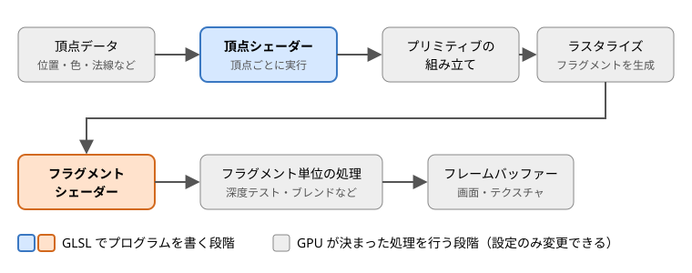

第 2 章 シェーダーと GPU の基礎
この章では、GLSL を書き始める前に知っておくべき、GPU が画像を描く仕組みと、その中でシェーダーが担う役割を説明します。
シェーダーとは
シェーダーは、GPU（Graphics Processing Unit）上で実行される小さなプログラムです。3D の物体をどこに表示するか、画面の各点を何色にするか、といった描画の計算を行います。GLSL（OpenGL Shading Language）は、OpenGL、OpenGL ES、WebGL で使われるシェーダーの記述言語で、C 言語に似た文法を持っています。
CPU と GPU の違い
CPU と GPU は、得意な処理が異なります。
項目 |
CPU |
GPU |
|---|---|---|
演算器の数 |
少ない（数個〜数十個のコア） |
非常に多い（数千個以上の演算器） |
得意な処理 |
複雑な分岐を含む、順番に進める処理 |
同じ計算を大量のデータに対して同時に行う処理 |
描画での役割 |
描画の準備と指示（どの物体をどの設定で描くか） |
頂点や画面の各点についての計算 |
画面の解像度が 1920 × 1080 の場合、画面の点は約 200 万個あります。それぞれの点の色を決める計算は互いに独立しているので、GPU はこれらを並列に処理できます。シェーダーは、この「1 つの頂点」や「1 つの点」についての計算を記述するプログラムです。GPU は同じシェーダーを多数の頂点や点に対して同時に実行します。
この仕組みから、シェーダーには次の性質があります。
シェーダーの 1 回の実行は、1 つの頂点または 1 つのフラグメント（後述）だけを担当します。
同時に実行されている、ほかの頂点やフラグメントの計算結果を読むことはできません。
前回の描画で計算した値を、変数に残しておくことはできません。値を残したい場合は、テクスチャなどに書き出す必要があります（第 13 章）。
レンダリングパイプライン
GPU が頂点データから画像を作るまでの一連の処理を、レンダリングパイプラインと呼びます。WebGL 2.0（OpenGL ES 3.0）のレンダリングパイプラインは、おおよそ次の図のような流れになっています。


レンダリングパイプライン
段階 |
内容 |
|---|---|
頂点データ |
描きたい形を表す頂点の情報です。位置のほか、色、法線、テクスチャ座標などを頂点ごとに持たせることができます。JavaScript から GPU のメモリに転送します。 |
頂点シェーダー |
頂点ごとに 1 回実行され、頂点の画面上の位置を計算します（第 7 章）。 |
プリミティブの組み立て |
頂点を 3 個ずつ組み合わせて三角形を作るなど、頂点を図形（プリミティブ）にまとめます。画面の外にはみ出した部分の切り取り（クリッピング）もここで行われます。 |
ラスタライズ |
三角形が画面上のどの画素を覆うかを調べ、覆われた画素ごとにフラグメントを作ります。頂点シェーダーが出力した値は、三角形の内部で補間されてフラグメントに渡されます（第 6 章）。 |
フラグメントシェーダー |
フラグメントごとに 1 回実行され、その色を計算します（第 8 章）。 |
フラグメント単位の処理 |
深度テスト（手前の物体だけを残す処理）や、ブレンド（半透明の合成）などを行います。 |
フレームバッファー |
最終的な色が書き込まれる領域です。通常は画面（WebGL ではキャンバス）ですが、テクスチャに書き込むこともできます（第 13 章）。 |
このうち、プログラムを書いて処理の内容を決められるのは、頂点シェーダーとフラグメントシェーダーの 2 つです。それ以外の段階は GPU が決まった処理を行い、プログラムからは設定（深度テストを行うかどうかなど）だけを変更できます。
注釈
フラグメントは「画素の候補」です。フラグメントシェーダーが計算した色は、深度テストなどで捨てられることがあり、そのまま画面の画素の色になるとは限りません。そのため、画素とは区別してフラグメントと呼びます。
頂点シェーダーとフラグメントシェーダー
2 つのシェーダーの役割をまとめると、次のようになります。
項目 |
頂点シェーダー |
フラグメントシェーダー |
|---|---|---|
実行される単位 |
頂点ごと |
フラグメントごと |
主な入力 |
頂点データ（位置、色、法線など） |
頂点シェーダーの出力を補間した値 |
主な出力 |
頂点の位置（ |
フラグメントの色 |
主な用途 |
座標変換、頂点の変形 |
色の計算、テクスチャの貼り付け、ライティング |
三角形 1 枚を描く場合、頂点シェーダーは 3 回しか実行されませんが、フラグメントシェーダーは三角形が覆う画素の数だけ実行されます。画面いっぱいの三角形なら数十万回以上です。この実行回数の違いは、性能を考えるときに重要になります（第 15 章）。
GLSL のバージョン
GLSL には、使用するグラフィックス API に応じて複数のバージョンがあります。シェーダーの先頭には、どのバージョンで書いたかを #version で指定します。
グラフィックス API |
GLSL のバージョン |
|
|---|---|---|
OpenGL 3.3 |
GLSL 3.30 |
|
OpenGL 4.6 |
GLSL 4.60 |
|
OpenGL ES 2.0、WebGL 1.0 |
GLSL ES 1.00 |
|
OpenGL ES 3.0、WebGL 2.0 |
GLSL ES 3.00 |
|
OpenGL ES 3.2 |
GLSL ES 3.20 |
|
GLSL ES（ES は Embedded Systems の略）は、スマートフォンなどの組み込み機器向けの OpenGL ES で使われる GLSL です。WebGL は OpenGL ES をもとに作られているため、WebGL でも GLSL ES を使います。
本書では、WebGL 2.0 で使う GLSL ES 3.00 を扱います。デスクトップ向けの GLSL（OpenGL 3.3 以降）とは文法の大部分が共通しているので、本書の内容はデスクトップ向けの GLSL を学ぶ際にもそのまま役立ちます。主な違いは付録 B にまとめています。
注釈
Vulkan でも GLSL でシェーダーを書くことができます。ただし、Vulkan では GLSL のソースコードを事前に SPIR-V という中間形式に変換してから使います。